Why this paper had to be written
If Swin had to borrow from ConvNets to win… how much was really attention?
A Swin Transformer differs from a ResNet in two ways at once — and they were always changed together:
A new self-attention layer replaces the convolution.
A modern training recipe and macro design.
Everyone credited the operator. Nobody isolated the recipe.
“How much of the gap survives if we modernize a pure ConvNet — and never touch the operator?”
So the authors take a ResNet-50 and walk it, step by step, toward a Swin Transformer.
The modernization roadmap, one decision at a time
ConvNeXt invents no new primitive — it curates the best ideas from ten years of research:
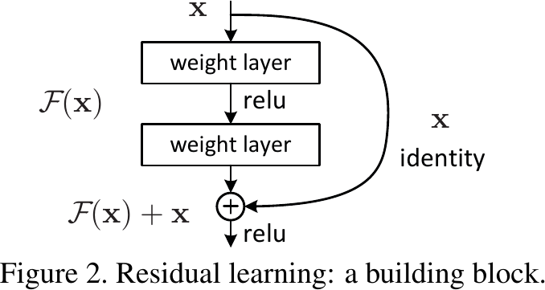
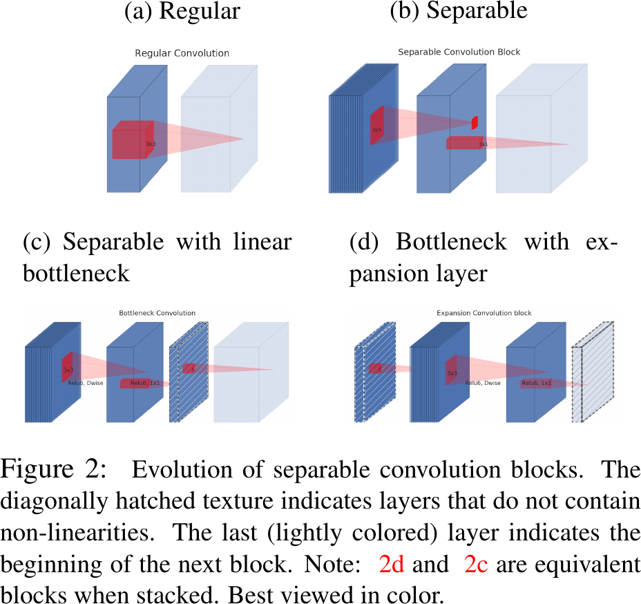
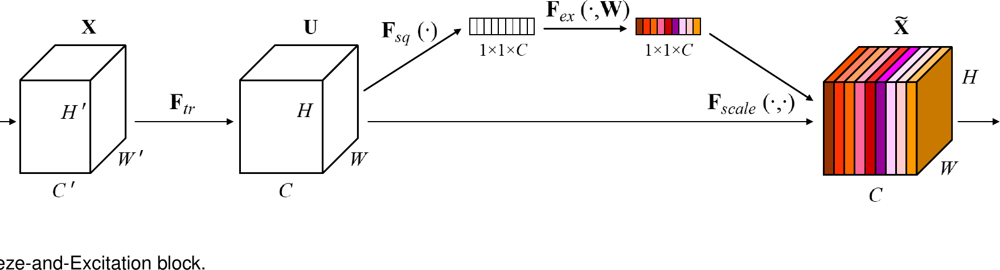
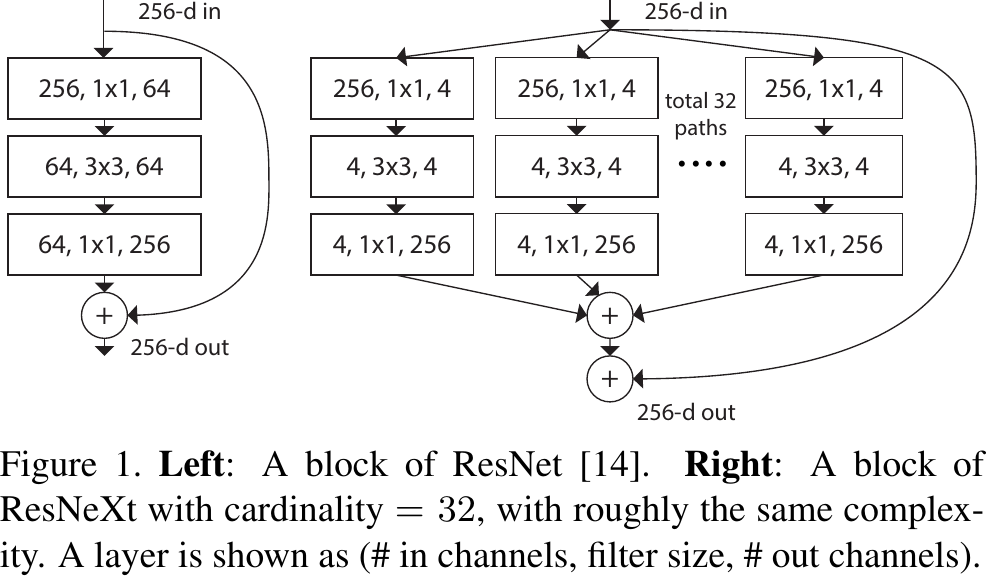
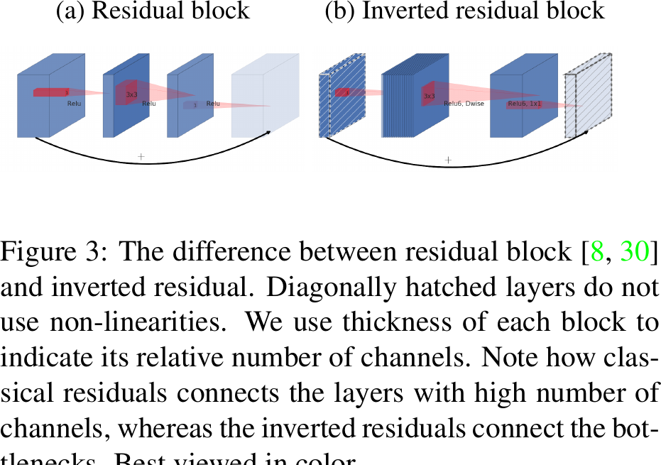
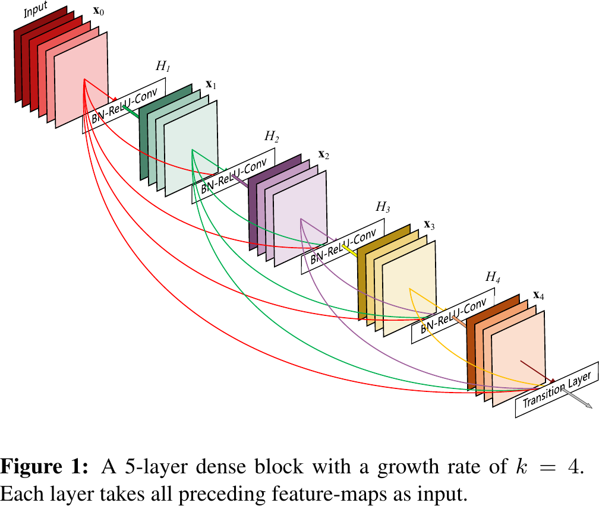
Also in the design space: ShuffleNet, SqueezeNet, EfficientNet, VGG (3×3 stacks), Inception (1×1 conv).
ResNet-50 → Swin-T • FLOPs held ≈ 4.5G
This chart is the spine of the whole talk.
Same ResNet-50 — not one layer touched. We only swap in a 2020s training recipe:
Show the network many more “views” of each image, so it can't memorize — it must generalize.
how a 300-epoch, very deep network avoids over-fitting
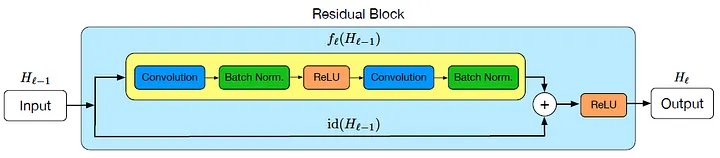
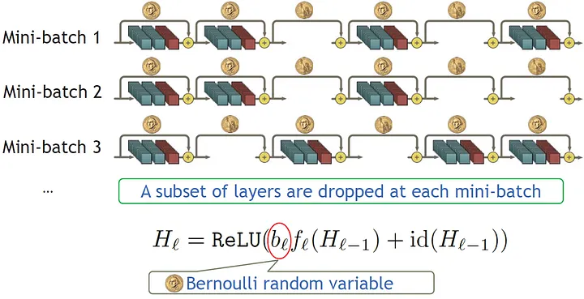
calibrating what we ask the network to predict
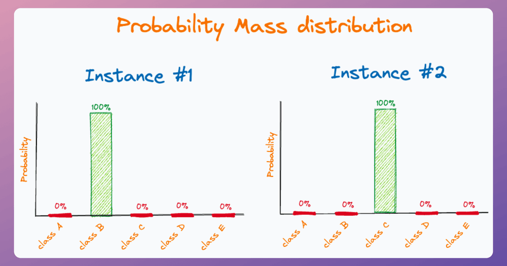
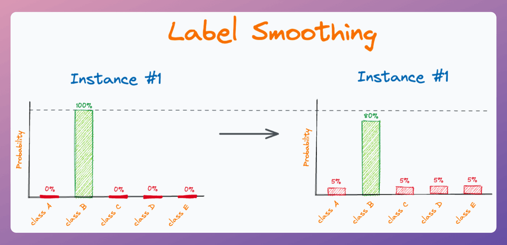
The recipe is fixed. From here we change the network itself, one decision at a time. We'll take each of these in its own slide:
Five moves, ≈4.5G FLOPs held fixed — then we assemble the final ConvNeXt block.
78.8 → 79.4 · Macro design ①
A ResNet sees an image in four stages, halving the resolution at each. Inside a stage it just repeats the same block — and ResNet-50's split is (3, 4, 6, 3), sixteen blocks in all.
Swin pours most of its blocks into the third stage — a 1 : 1 : 3 : 1 ratio. ConvNeXt simply copies that, shifting blocks out of stage ② into stage ③: (3, 3, 9, 3). Same depth, same ≈4.5G FLOPs — only the distribution moves.
Stage ③ runs at 14×14: cheap enough to stack deep, yet coarse enough to reason about object parts rather than edges. Depth spent here buys more accuracy per FLOP than anywhere else.
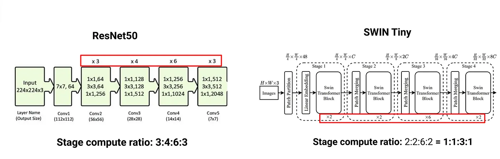
79.4 → 79.5 · Macro design ②
Before any real processing, the stem compresses the raw 224×224 image into a smaller feature map that the rest of the network builds on.
ResNet's stem is a 7×7 conv at stride 2, then a max-pool — its windows overlap and it shrinks the image in two coarse steps. ConvNeXt swaps in a single 4×4, stride-4 conv: every window is a clean, non-overlapping patch — exactly how ViT slices an image into tokens.
The accuracy move is tiny, but the point isn't the number — the ConvNet now ingests pixels the same way as the Transformer it's chasing. Simpler, faster, and a fair, apples-to-apples start.
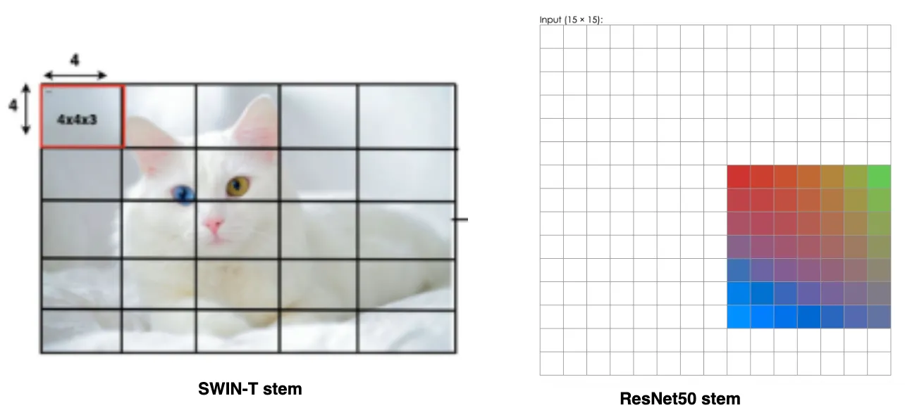
78.8 → 80.5 · Macro design ③ — the conceptual heart
A normal convolution does two things in a single step: it blends neighbouring pixels (space) and sums across every input channel (features). Powerful — but expensive, and the two roles are fused together.
Depthwise-separable conv splits that in two. A depthwise conv gives each channel its own filter, so it mixes only over space. A 1×1 “pointwise” conv then mixes only across channels. Same expressive power, a fraction of the FLOPs.
Depthwise is so cheap that ConvNeXt reinvests the budget — widening the net 64 → 96 channels to match Swin. This pairing is the biggest single jump of the macro section.
Attention mixes across space; the MLP mixes across channels. Depthwise + pointwise is the convolutional echo of exactly that split — which is why the two families quietly converge.
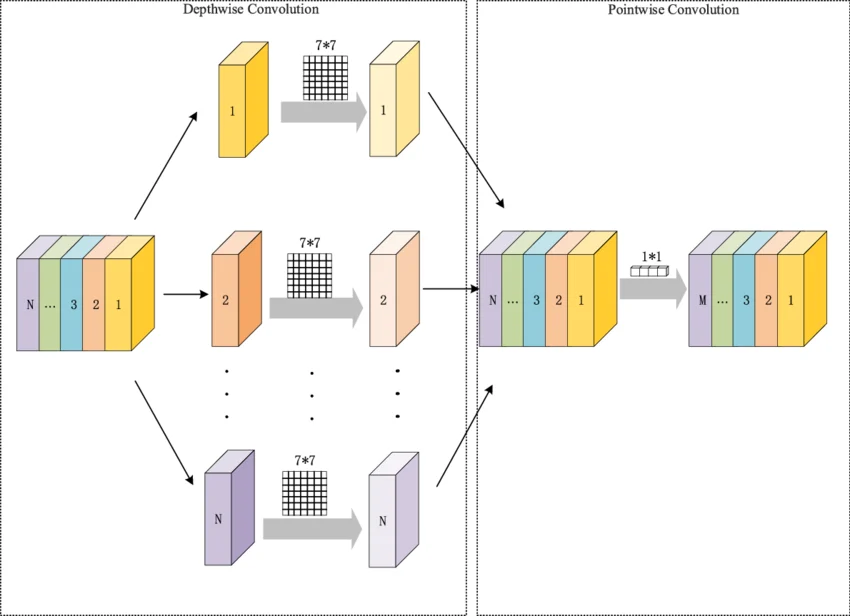
80.5 → 80.6 · Macro design ④ · from MobileNetV2
A ResNet block pinches the channels down in the middle — many → few → many — so the costly 3×3 runs on few channels. Cheap, but the representation is squeezed through a narrow neck.
The inverted residual does the opposite: few → many → few. It expands the channels ~4× in the middle, does the spatial mixing there (now a cheap depthwise conv), then projects back down.
Because the spatial op is depthwise, the wide middle is cheap; the only heavy 1×1's sit on the thin ends. In the figure, the same block drops from 1.1M → 52K weights.
A Transformer's feed-forward block expands the dimension 4× (96 → 384), applies a nonlinearity, and projects back to 96 — an inverted bottleneck. ConvNeXt's block and the FFN are the same shape.
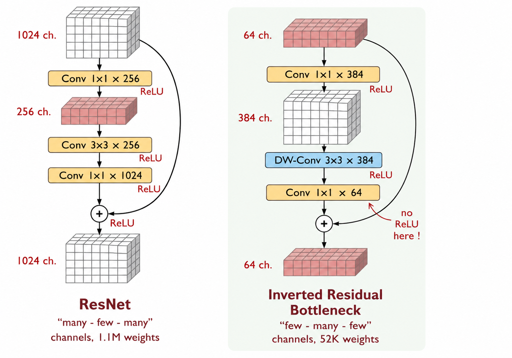
80.6 → 80.6 · Macro design ⑤
Since VGG, ConvNets stack tiny 3×3 kernels. But a Transformer's local attention looks at a whole 7×7 neighbourhood at once — a much wider view per layer.
To make big kernels affordable, ConvNeXt slides the depthwise layer up, ahead of the 1×1's, so it runs on fewer channels. A small dip (80.6 → 79.9) — but large kernels are now cheap.
Enlarge the depthwise kernel 3 → 5 → 7 (79.9 → 80.6). Each layer now sees the same span as Swin's local-attention window — the last big conceptual gap to the Transformer, closed.
Push to 9 or 11 and accuracy flatlines while cost climbs. Seven is the sweet spot — an honest, empirical limit.
Same ≈4.5G FLOPs throughout. Each architectural move, and what it bought:
A pure ConvNet is now within 0.7% of Swin-T — and the micro-design polish still to come pushes it past.
80.6 → 81.5 · Micro design
A ResNet block crams a norm and an activation after almost every layer. A Transformer block is strikingly bare — one activation, one norm. Each extra piece can disrupt the signal, so ConvNeXt strips the block down to match.
GELU is a smooth ReLU — it doesn't hard-cut at zero, letting a little negative signal (and a smooth gradient) through. The swap alone is accuracy-neutral, but keeping just one GELU per block lifts 80.6 → 81.3.
Drop to one norm per block (81.3 → 81.4), then swap BatchNorm for LayerNorm (81.4 → 81.5). LayerNorm normalizes each sample on its own — so it stays stable at the tiny batch sizes used for detection & segmentation.
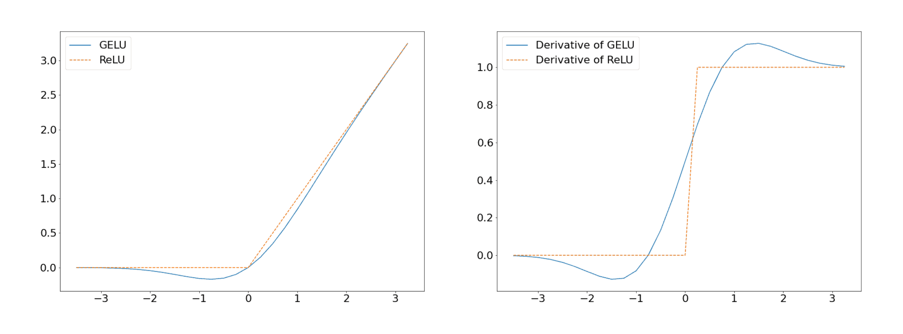
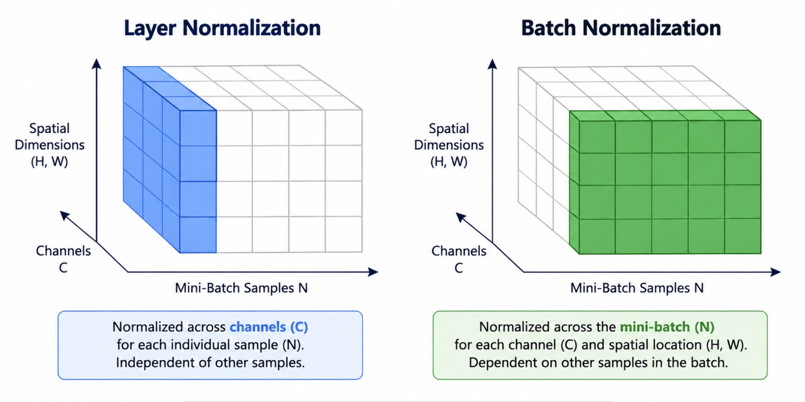
81.5 → 82.0 · separate downsampling
ResNet shrinks resolution inside a residual block. ConvNeXt gives it a dedicated layer between stages — a 2×2, stride-2 conv with its own LayerNorm.
Untangling “change resolution” from “compute features” keeps training stable — a norm guards each resolution change, exactly like Swin's patch-merging. The last step: 81.5 → 82.0.
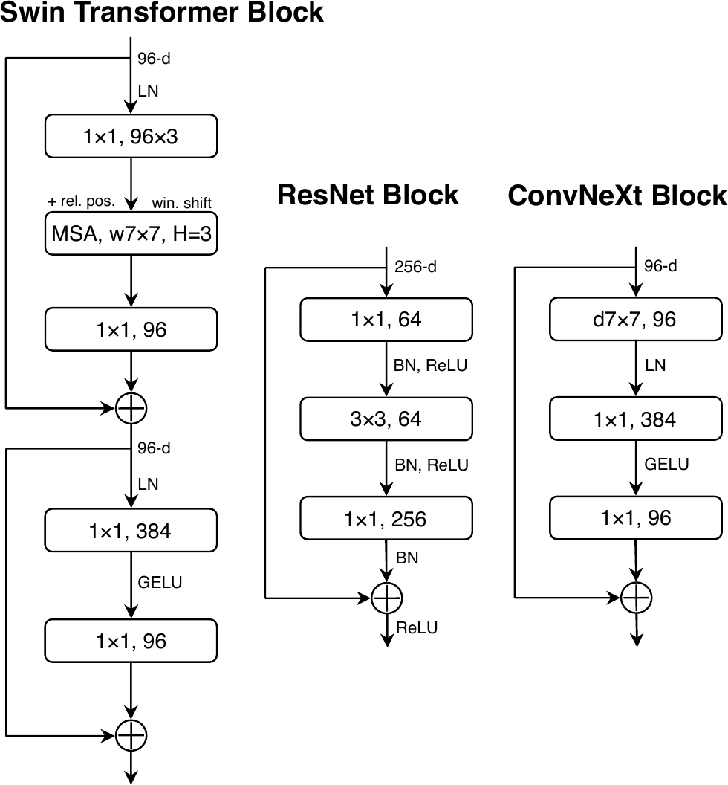
No new operator, no exotic primitive — just a decade of known ideas, re-applied with intent. 82.0 > Swin-T 81.3.
Does the modernized ConvNet actually deliver?
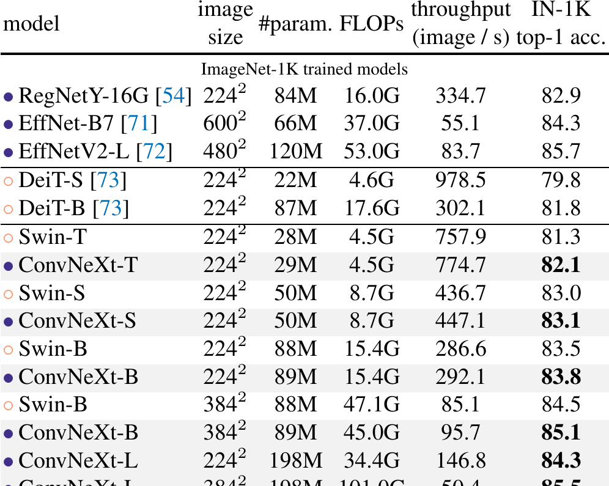
Same compute budget, consistently ahead.
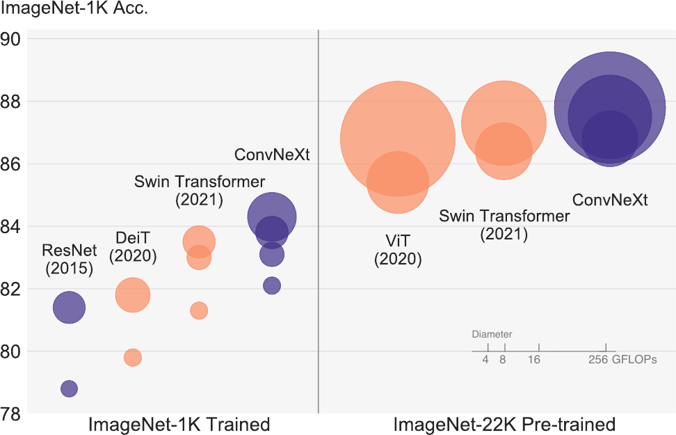
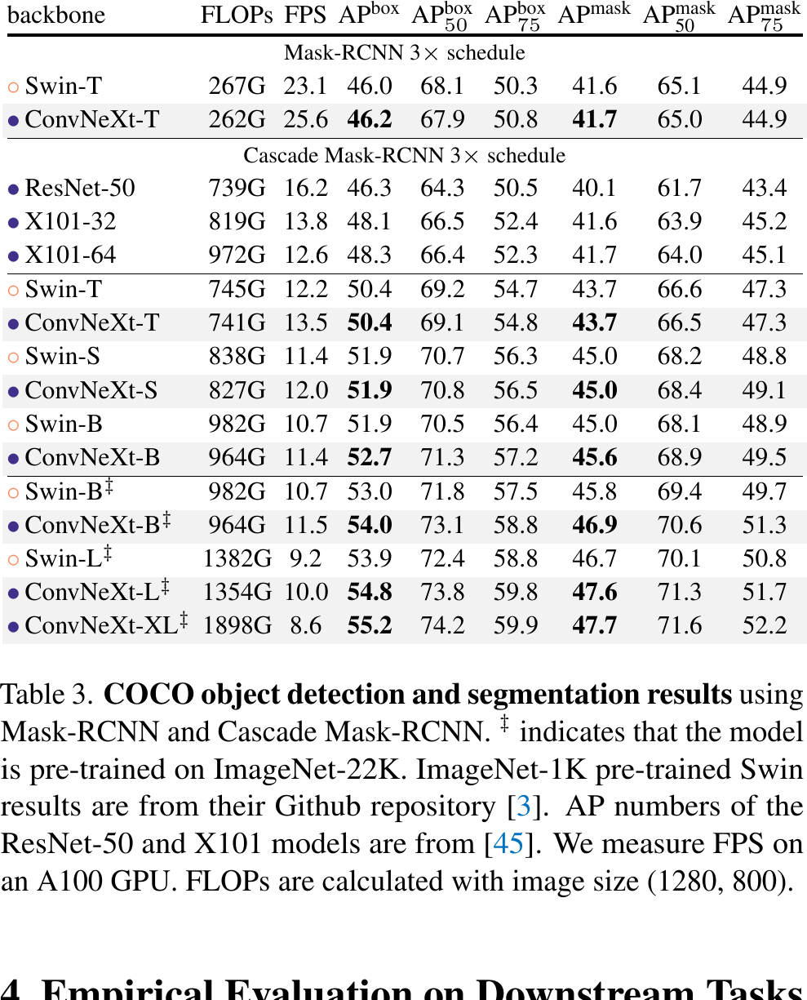
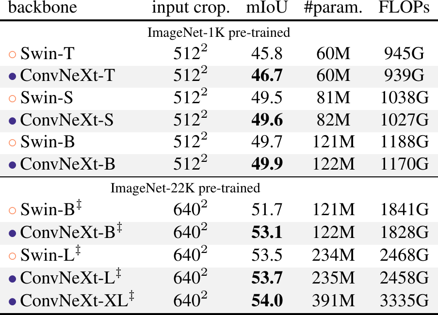
What it proved — and what it left open
ConvNets and Transformers borrowed each other's best ideas.
ConvNeXt was the last great push to prove the ConvNet still belongs — and it worked. Convolutions solved vision, and showed the world that deep learning could be trusted.
But by 2026 the field has moved on: the frontier is ViT-based, trained jointly on image + text, and open-vocabulary.
So here's one last bow to the architecture that carried vision for a decade.
Thank you.
Questions & Answers
Liu, Mao, Wu, Feichtenhofer, Darrell, Xie. A ConvNet for the 2020s. CVPR 2022. arXiv:2201.03545.
Dosovitskiy et al. An Image is Worth 16×16 Words (ViT). ICLR 2021.
Liu et al. Swin Transformer. ICCV 2021.
Vaswani et al. Attention Is All You Need. NeurIPS 2017.
He et al. Deep Residual Learning (ResNet). CVPR 2016.
Xie et al. Aggregated Residual Transformations (ResNeXt). CVPR 2017.
Howard et al. MobileNets. 2017 • Sandler et al. MobileNetV2. CVPR 2018.
Hu et al. Squeeze-and-Excitation. CVPR 2018 • Huang et al. DenseNet. CVPR 2017.
Zhang et al. ShuffleNet. CVPR 2018 • Iandola et al. SqueezeNet. 2016.
Tan & Le. EfficientNet. ICML 2019.
Loshchilov & Hutter (AdamW); Zhang et al. (Mixup); Cubuk et al. (RandAugment); Huang et al. (Stochastic Depth).
Figures reproduced from the cited papers for academic, non-commercial use.